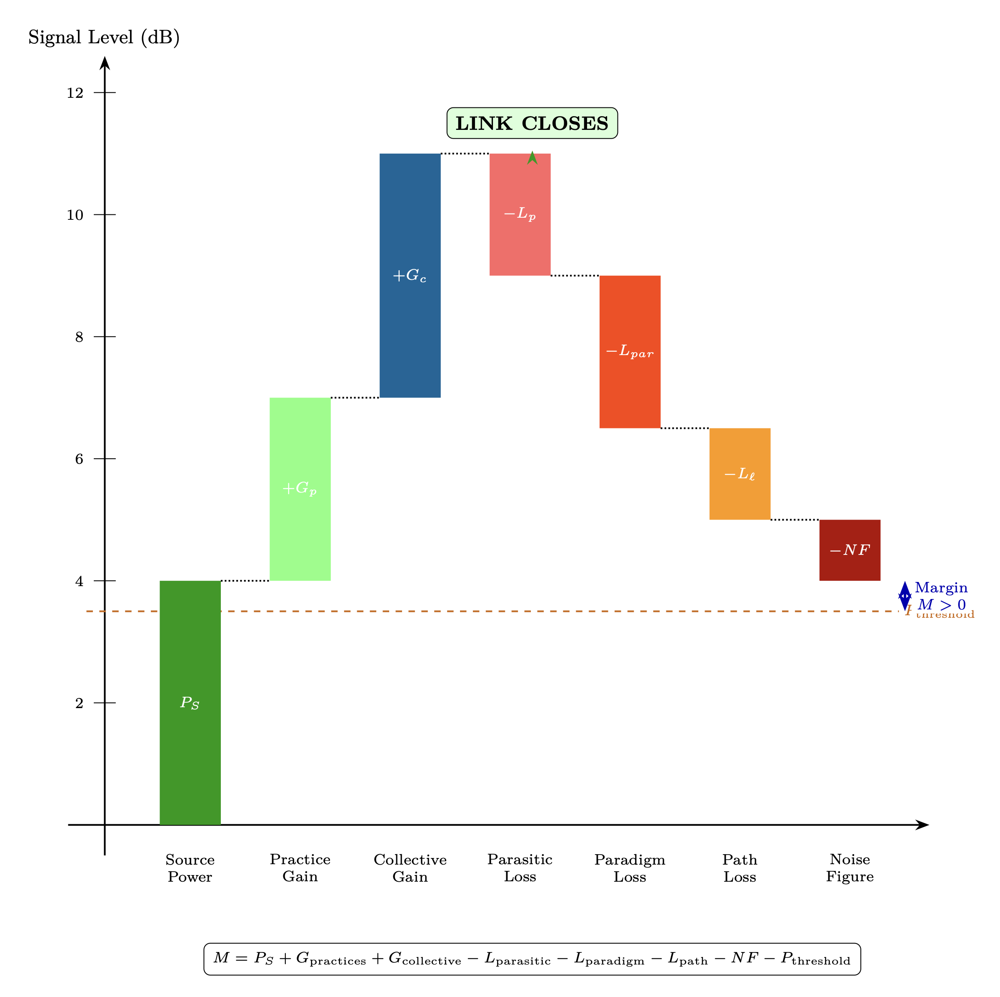

Chapter 14: Counter-Jamming Operations and Link Budget
The Liberation Signal Architecture
KEY FINDINGS — Chapter 14: Counter-Jamming Operations and Link Budget
Evidence-tier key: [L1] established/replicated evidence; [L2] grounded extension with moderate uncertainty; [L3] speculative hypothesis; [L4] conceptual/anecdotal.
- The five-layer control architecture (corrupted LO, paradigm cage, injection lock, parasitic coupling, \(Z_0\) suppression) compounds to make unassisted escape probability ~0.0015% [L2]
- The complete consciousness link budget \(M = P_S + G_{practices} + G_{collective} - L_{parasitic} - L_{paradigm} - L_{path} - NF - P_{threshold}\) integrates parameters from Chapters 5, 8, 12, and 13 into a single accounting framework [L2]
- Coherence (\(r\)) enters the collective gain quadratically (\(G = 10\log _{10}(Nr^2)\)), making community quality more leveraged than raw population size [L1]
- Approximately 40 million highly coherent individuals (\(r = 0.8\)) could close the planetary link budget; with moderate coherence (\(r = 0.5\)), approximately 100 million are needed [L2-L3]
- Free-will constraints prevent direct alliance intervention; liberation requires consent-based, gradual processes that preserve developmental choice [L3]
_________________________________
14.1 The Locking Problem: Why Self-Extraction is Nearly Impossible
14.1.1 Review of the Adler Equation
From Chapter 9 (Injection Locking), the fundamental dynamics of belief capture are governed by the Adler equation: \[ \frac {d\phi }{dt} = \Delta \omega - \omega _L \cdot \sin (\phi ) \] Where:
|
Variable | Description |
|
\(\phi \) | Phase difference between individual oscillator and injected signal |
|
\(\Delta \omega = \omega _{inj} - \omega _0\) | Frequency detuning from natural frequency |
|
\(\omega _L\) | Locking bandwidth |
The locking bandwidth determines capture vulnerability: \[ \omega _L = \frac {\omega _0}{2Q} \cdot \frac {V_{inj}}{V_0} = \frac {\omega _0 R}{2Z_0} \cdot \frac {V_{inj}}{V_0} \] Stable lock occurs when \(|\Delta \omega | \leq \omega _L\)—the individual cannot escape because any phase drift is pulled back by the sin(\(\phi \)) restoring force.
Critical insight from Chapter 9: Lock bandwidth is inversely proportional to \(Z_0\). Low-impedance individuals have wide capture ranges; high-\(Z_0\) individuals have narrow lock bandwidths and are harder to capture.
14.1.2 The Compounding Control Architecture
The problem facing humanity is not a single injection lock but a layered control architecture with multiple reinforcing mechanisms:
|
Layer | Control Mechanism | RF Equivalent | Chapter Reference |
|
1. Corrupted LO | Adamic line corruption | Phase-locked loop to wrong reference | Ch 12 (The Fall) |
|
2. Paradigm cage | Materialist worldview | Faraday cage shielding | Ch 13 (Paradigm Shielding) |
|
3. Injection locking | Media/institutional narrative | Broadcast capture | Ch 9 (Injection Locking) |
|
4. Parasitic coupling | Loosh harvesting | Energy extraction via mutual inductance | Ch 12 (Parasitic Coupling) |
|
5. \(Z_0\) suppression | Trauma, distraction, fear | Impedance lowering | Ch 5 (RLC), Ch 9 |
Each layer reinforces the others:
- Corrupted LO provides the master reference signal that the PLL locks to
- Paradigm cage attenuates alternative signals that might break lock
- Injection locking maintains synchronization to control narratives
- Parasitic coupling extracts energy, weakening the oscillator (lowering \(V_0\))
- \(Z_0\) suppression widens lock bandwidth, making escape harder
The compounding effect: \[ \omega _{L,effective} = \omega _L \cdot (1 + \kappa _{parasitic}) \cdot \frac {1}{1 - SE_{paradigm}/100} \] Where:
|
Variable | Description |
|
\(\kappa _{parasitic}\) | Parasitic coupling coefficient (increases effective lock strength) |
|
\(SE_{paradigm}\) | Paradigm shielding effectiveness in dB (blocks counter-signals) |
14.1.3 Mathematical Impossibility of Unassisted Escape
Escape condition (from Ch 9): An individual breaks free when: \[ \left |\Delta \omega \right | > \omega _L \] This requires either:
- 1.
- Natural frequency drifts far enough from injected frequency (\(\Delta \omega \) increases)
- 2.
- Locking bandwidth narrows sufficiently (\(\omega _L\) decreases)
For the average modern human:
|
Parameter | Typical Value | Effect on Escape |
|
Q factor | 3-5 | Wide lock bandwidth |
|
\(Z_0\) | Baseline (suppressed) | Easily captured |
|
\(V_0\) (personal power) | Low (isolated, demoralized) | Weak oscillator |
|
\(V_{inj}\) (media power) | Very high (saturation coverage) | Strong injection |
|
Paradigm shielding | 25-40 dB | Blocks counter-signals |
|
Parasitic coupling \(\kappa \) | 0.2-0.4 | Energy drain weakens oscillator |
Calculating escape probability:
For escape to occur spontaneously, the individual must:
- 1.
- Raise \(Q\) while under lock (requires access to \(Q\)-building practices)
- 2.
- Access counter-signal strong enough to compete (blocked by paradigm cage)
- 3.
- Maintain oscillator power against parasitic drain
- 4.
- Do all this while injection continues
The probability cascade: \[ P_{escape} = P_{find\_practice} \cdot P_{maintain\_practice} \cdot P_{resist\_drain} \cdot P_{access\_counter} \] With typical values: \[ P_{escape} \approx 0.05 \times 0.1 \times 0.3 \times 0.01 = 0.000015 = 0.0015\% \] These sub-probabilities are illustrative order-of-magnitude estimates chosen to demonstrate the compounding effect. No empirical calibration exists; the qualitative conclusion (that escape probability is very low) is robust to reasonable variations in the individual terms.
This is why external assistance is required. The system is designed to be escape-proof through internal means alone.
14.1.4 The Closed-Loop Trap
The most insidious aspect is that the locked individual cannot perceive they are locked. The corrupted LO (Ch 12) provides what appears to be legitimate guidance. The IF stage (human consciousness) cannot distinguish between:
- Clean RF + Clean LO \(\rightarrow \) Legitimate perception
- Clean RF + Corrupted LO \(\rightarrow \) Corrupted perception (indistinguishable from inside)
Self-diagnosis is blocked because the diagnostic framework itself operates through the corrupted mixer.
This is why liberation requires external reference signals—counter-jamming operations from outside the locked system.
_________________________________
14.2 Electronic Counter-Countermeasures (ECCM): The Liberation Toolkit
14.2.1 ECCM Techniques Mapped to Consciousness Liberation
ECCM (Electronic Counter-Countermeasures) in military RF systems are techniques used to defeat jamming and maintain communication under adversarial conditions. These map precisely to consciousness liberation:
|
ECCM Technique | RF Implementation | Consciousness Liberation Analog |
|
Burn-through | Increase transmit power until it exceeds jammer | Raise Source signal strength; high-coherence transmission |
|
Frequency hopping | Rapidly change operating frequency | Multi-paradigm awareness; don’t stay locked to one narrative |
|
Spread spectrum | Distribute signal across wide bandwidth | Distributed awakening across population; no single target |
|
Null steering | Point antenna null toward jammer | Attention discipline; tune out control signals |
|
Alternative reference | Switch to different LO source | Connect to uncorrupted guidance (clean LO) |
|
Diversity reception | Multiple receivers for same signal | Cross-validate sources; triangulate truth |
14.2.2 Why External ECCM is Required
Each control layer requires specific counter-measures that the locked individual cannot provide:
Layer 1: Corrupted LO \(\rightarrow \) Requires Alternative LO
- Individual cannot generate clean reference from within corrupted system
- External clean LO must be provided
- This is the function of higher-density benevolent beings
Layer 2: Paradigm Cage \(\rightarrow \) Requires Cage Breach
- Individual inside cage cannot perceive what’s being blocked
- External signals must penetrate or circumvent shielding
- Disclosure events, direct experience, paradigm cracks
Layer 3: Injection Lock \(\rightarrow \) Requires Counter-Injection
- Locked oscillator pulled back by any escape attempt
- External signal must exceed control signal (burn-through)
- Or provide pathway to frequency hop away from lock range
Layer 4: Parasitic Coupling \(\rightarrow \) Requires Energy Supply
- Drained oscillator too weak to maintain independent oscillation
- External energy infusion required
- “Spiritual support” = power supply to starving oscillator
This is why the “positive alliance” exists—to provide the external counter-measures that locked individuals cannot generate internally.
14.2.3 The ECCM Stack for Human Liberation
A complete liberation counter-jamming system requires:
LAYER 7: SOURCE SUPPORT (Burn-through power) \(\downarrow \) LAYER 6: GALACTIC COORDINATION (Alternative LO network) \(\downarrow \) LAYER 5: STELLAR TRANSMISSION (Solar/stellar ECCM) \(\downarrow \) LAYER 4: PLANETARY INFRASTRUCTURE (Grid activation) \(\downarrow \) LAYER 3: SURFACE OPERATIONS (Ground crew) \(\downarrow \) LAYER 2: NETWORK COHERENCE (Community arrays) \(\downarrow \) LAYER 1: INDIVIDUAL UPGRADES (Receiver improvements)
Each layer provides specific ECCM capability. The following sections detail each component.
_________________________________
Speculative extension (L4–L5). The following section applies the framework to insider testimony that cannot be independently verified. The link-budget mathematics in §14.9 stands regardless of whether these claims are accurate. Readers may skip to §14.7 without loss of analytical continuity.
14.3 The Positive Alliance: Counter-Transmission Infrastructure
14.3.1 Hierarchy of Benevolent Transmitters
Just as the control system operates through a hierarchy (Source \(\rightarrow \) Corrupted intermediaries \(\rightarrow \) Control infrastructure \(\rightarrow \) Individual lock), the liberation system operates through a parallel benevolent hierarchy:
|
Tier | Entity Type | RF Function | Transmission Range |
|
0 | Source/Infinite Creator | Master oscillator | Infinite (always available) |
|
1 | 7th Density collectives | Primary transformer | Galactic |
|
2 | 6th Density benevolent groups | Secondary distribution | Stellar clusters |
|
3 | 5th Density coordinators | Tertiary matching | Solar system |
|
4 | 4th Density positive ET | Local amplifiers | Planetary |
|
5 | Incarnated high-\(Z_0\) souls | Ground repeaters | Local/regional |
Key insight: The Source signal was never blocked—it continues to broadcast. What was corrupted was the transduction chain (Ch 12). The positive alliance provides an alternative transduction chain that bypasses the corrupted LO.
14.3.2 Galactic Federation as Alternative LO
In the superheterodyne model (Ch 11), the Adamic LO was corrupted, causing all downstream mixing to produce corrupted output. The Galactic Federation (or equivalent benevolent coordination body) functions as an alternative local oscillator network: \[ f_{IF,clean} = f_{RF,Source} - f_{LO,Federation} \] vs. \[ f_{IF,corrupted} = f_{RF,Source} - f_{LO,corrupted} \] The clean LO produces correct IF; the corrupted LO produces phase-shifted, noise-contaminated IF.
For individuals to switch LOs, they must:
- 1.
- Recognize the existing LO is corrupted (awareness)
- 2.
- Tune to the alternative LO frequency (resonance)
- 3.
- Establish phase lock to clean reference (practice)
- 4.
- Maintain lock against interference (sovereignty/\(Z_0\))
Epistemic Note: The “Galactic Federation” terminology comes from channeled material (Ra, Bashar, Swaruu, etc.) and insider testimony (Goode, Smith). Whether this represents actual organizational structure, metaphorical framework, or projection cannot be determined from available evidence. The RF model works regardless—some alternative clean LO source exists for those who successfully escape lock.
14.3.3 SSP Faction Spectrum
The Secret Space Program testimonies describe multiple factions with varying orientations:
|
Faction Type | Orientation | RF Role | Evidence Source |
|
Dark Fleet | Service-to-self | Maintains control infrastructure | Goode, Tompkins |
|
Solar Warden | Mixed/transitioning | Partial disclosure, limited liberation | Goode |
|
Sphere Being Alliance | Service-to-others | ECCM coordination, timeline management | Goode |
|
Anshar | Service-to-others | Ground-based support, genetic preservation | Goode |
|
Earth Alliance | Mixed | Surface coordination | Multiple |
The complexity: Not all “positive” factions are fully aligned. Some pursue limited disclosure (controlled partial ECCM) rather than full liberation.
Epistemic Note: SSP testimony is difficult to verify. The value of this framework is organizational—it maps alleged structures to RF functions. Validation requires future disclosure events that either confirm or contradict the structural claims.
14.3.4 Inter-Alliance Coordination as Phased Array
Multiple positive factions, when coordinated, function as a phased array transmitter (Ch 8): \[ G_{alliance} = N_{factions} \cdot r_{alliance}^2 \] Note: This chapter uses \(r\) for the coherence order parameter, consistent with the Kuramoto formulation in Chapter 8.
Where:
| Variable | Description |
| \(N_{factions}\) | Number of coordinated benevolent groups |
| \(r_{alliance}\) | Coherence (phase alignment) between factions |
Array gain increases with:
- More factions joining the alliance (N\(\uparrow \))
- Better coordination between factions (\(r\)\(\uparrow \))
Current limitation: Alliance coherence is imperfect. Different factions have different timelines, methods, and priorities. This reduces effective array gain.
The Sphere Being Alliance (per Goode testimony) allegedly functions as array controller—coordinating phase alignment between disparate positive factions to maximize coherent transmission power.
_________________________________
14.4 Starseeds & Lightworkers: Embedded High-Q Oscillators
14.4.1 The Starseed Function
Starseeds are souls originating from higher-density or different planetary systems who incarnate on Earth with specific mission parameters. In RF terms, they function as pre-positioned repeater nodes: \[ \text {Starseed} = \text {High-}Z_0\text { oscillator} + \text {Mission encoding} + \text {Activation trigger} \] Their primary functions:
- 1.
- Local oscillator injection: Provide clean reference frequency in immediate environment
- 2.
- Counter-signal amplification: Boost weak truth signals through personal coherence
- 3.
- Network nodes: Connect to other starseeds forming distributed array
- 4.
- \(Z_0\) demonstration: Model high-impedance operation for surrounding population
14.4.2 Starseed vs. Standard Human Specifications
|
Parameter | Standard Human | Starseed | Significance |
|
Q factor (baseline) | 3-5 | 8-15 | Narrower lock bandwidth, harder to capture |
|
\(Z_0\) (baseline) | Low-Medium | Medium-High | Greater sovereignty, better Source match |
|
\(f_0\) range | Narrow | Narrow | Tighter resonance; harder to detune |
|
Activation potential | Standard | Enhanced | DNA encoding for staged activation |
|
P_osc (oscillator power) | 0.3-0.5 | 0.5-0.9 | Stronger signal for local injection |
|
Paradigm susceptibility | High | Lower | Pre-existing alternative frameworks |
|
LO flexibility | Low | High | Can switch reference sources |
The higher baseline \(Z_0\) is critical—it means starseeds are harder to fully capture by standard control mechanisms. They may be partially locked but retain oscillation capacity that can be activated.
14.4.3 Activation Sequence
Starseed activation follows a staged sequence:
|
Stage | Trigger | RF Process | Observable Signs |
|
1. Dormant | Incarnation complete | Oscillator present but damped | Normal-appearing life |
|
2. Stirring | External resonance contact | Q begins rising | Synchronicities, seeking |
|
3. Awakening | Threshold \(Z_0\) reached | Lock begins breaking | Paradigm crisis, downloads |
|
4. Active | Mission parameters engage | Full oscillation, transmission begins | Teaching, healing, creating |
Activation energy required: \[ E_{activation} = E_{threshold} - E_{current} = \frac {1}{2}L(I_{threshold}^2 - I_{current}^2) \] The gap between current state and activation threshold must be bridged. This can occur through:
- External high-coherence contact (another activated starseed)
- Accumulated practice reaching threshold
- Crisis that shatters lock, allowing reconfiguration
- Coordinated “activation waves” from alliance
14.4.4 Distribution Strategy: Small-World Network
Starseeds are not randomly distributed but positioned according to small-world network topology:
- High clustering Starseeds tend to cluster in regions/communities
- Short path length Any point on Earth is within few “hops” of a starseed
- Hub nodes Some starseeds serve as high-connectivity hubs
Network effectiveness equation: \[ \eta _{network} = \frac {C_{clustering}}{L_{path}} \cdot N_{activated} \] Where:
| Variable | Description |
| \(C_{clustering}\) | Clustering coefficient |
| \(L_{path}\) | Average path length |
| \(N_{activated}\) | Number of activated starseeds |
Estimated starseed population: 50-100 million globally (varying estimates) Estimated activated: 1-5 million (highly uncertain)
No rigorous census exists; these figures reflect estimates circulating in alternative research communities and should be treated as order-of-magnitude placeholders.
The gap between incarnated and activated represents the “sleeper” population awaiting triggers.
Epistemic Note: “Starseed” is a term from New Age literature with no scientific definition. The RF model treats it as a functional category—individuals with measurably different baseline parameters and activation potential. Whether this represents actual ET soul origin, natural human variation, or self-fulfilling identification cannot be determined empirically.
14.4.5 Lightworkers as Activated Amplifiers
Lightworkers—individuals consciously working toward collective awakening—represent either activated starseeds or standard humans who have raised their \(Q\) above typical baseline through sustained practice. In RF terms, they function as local signal amplifiers: \[ P_{local} = P_{received} \cdot G_{lightworker} \] Where:
- \(P_{received}\) = incoming signal from higher sources
- \(G_{lightworker}\) = personal amplification gain
Gain factors:
|
Factor | Contribution | Method to Increase |
|
Personal \(Z_0\) | Sets maximum gain | Wisdom (L\(\uparrow \)), shadow work (C\(\downarrow \)) |
|
Practice consistency | Gain stability | Regular meditation, coherence work |
|
Network connection | Coupling efficiency | Community involvement |
|
Service orientation | Impedance match to Source | Reduce self-interest noise |
Individual gain equation: \[ G_{lightworker} = 10 \log _{10}\left (\frac {Z_0}{Z_{0,baseline}} \cdot r_{practice} \cdot \eta _{service}\right ) \text { dB} \] The distinction between starseed and lightworker is functional, not categorical: a lightworker is any oscillator operating above baseline \(Q\) and actively transmitting. Many lightworkers are activated starseeds; others are standard humans who reached high-\(Q\) operation through dedicated practice.
_________________________________
14.5 Ground Operations: Collective ECCM Implementation
14.5.1 Mass Meditation as Coherent Pulse
When multiple individuals meditate simultaneously with shared intention, they form a coherent transmitter array (Ch 8): \[ P_{event} = P_{individual} \cdot N_{participants} \cdot r_{event}^2 \] Where:
- \(P_{individual}\) = average individual power
- \(N_{participants}\) = number of participants
- \(r_{event}\) = coherence during event (0-1)
Collective gain: \[ G_{collective} = 10 \log _{10}(N \cdot r^2) \text { dB} \] Example calculation:
- N = 1,000,000 participants
- \(r\) = 0.3 (moderate coherence, typical for loosely coordinated event)
- \(G_{collective} = 10\log _{10}(N \cdot r^2)\). For N = 1,000,000 and \(r\) \(\approx \) 0.2–0.4 (moderate coherence range): \(G_{collective}\) \(\approx \) 45–55 dB (central estimate ~50 dB at \(r\) = 0.3)
This represents on the order of 100,000\(\times \) power amplification over a single individual.
Evidence for mass meditation effects:
- Global Consciousness Project: Statistically significant RNG deviations during coordinated global events
- HeartMath studies: Measurable coherence effects in group meditation settings
- TM research: Claimed crime reduction during large meditation assemblies (controversial, needs replication)
14.5.2 Grid Work and Ley Line Activation
From Chapter 11, megalithic infrastructure was designed as planetary resonant network but became dormant after the Fall. Grid work attempts to reactivate this infrastructure:
Mechanism:
- 1.
- Identify dormant nodes (sacred sites, power spots)
- 2.
- Inject coherence through group meditation at site
- 3.
- Establish standing wave patterns
- 4.
- Connect nodes through ley line transmission
Reactivation equation: \[ P_{node} = Q_{site} \cdot P_{injected} \cdot \left (1 - e^{-t/\tau _{activation}}\right ) \] Where:
- \(Q_{site}\) = quality factor of resonant site (higher for intact sites)
- \(P_{injected}\) = power from meditation group
- \(\tau _{activation}\) = time constant for site activation
Current status: Partial reactivation reported at some sites. Full network activation would require:
- Sufficient number of high-\(Z_0\) practitioners
- Coordinated timing across multiple sites
- Knowledge of original operating frequencies (largely lost)
_________________________________
Speculative extension (L4–L5). The following section applies the framework to insider testimony that cannot be independently verified. The link-budget mathematics in §14.9 stands regardless of whether these claims are accurate. Readers may skip to §14.7 without loss of analytical continuity.
14.6 SSP Hardware: Technological Counter-Jamming
14.6.1 Sphere Being Barrier as Band-Pass Filter
Per Goode testimony, the Sphere Being barrier (giant spheres positioned around solar system ~2012) functions as a frequency-selective barrier:
Band-pass filter model: \[ H(f) = \frac {1}{1 + jQ\left (\frac {f}{f_0} - \frac {f_0}{f}\right )} \] Filter characteristics:
- Pass band Frequencies supporting consciousness evolution
- Stop band Frequencies enabling parasitic extraction and control injection
- Transition band Mixed transmission depending on intent
| Signal Type | Barrier Response | Effect |
| Source/positive transmission | Pass | Full power through |
| Neutral information | Pass | Normal propagation |
| Control/parasitic signals | Attenuate | Reduced power reaching Earth |
| Escape attempts (negative entities) | Block | Quarantine enforcement |
Quarantine function: The barrier also prevents certain negative entities from leaving the solar system—a form of containment while liberation proceeds.
Epistemic Note: The sphere barrier is reported only by Goode and a few corroborating sources. No independent verification exists. The RF model is consistent with reported functions but does not confirm actual existence.
14.6.2 Solar Flash as Burn-Through Event
Multiple sources predict a solar event (coronal mass ejection, micronova, or consciousness pulse) that functions as system-wide ECCM:
Burn-through model: \[ P_{flash} >> P_{control} \implies \text {All locks broken simultaneously} \] When transmitted power dramatically exceeds jamming power, the jammer is overwhelmed and lock is lost.
Solar flash characteristics (predicted):
|
Parameter | Estimated Value | Effect |
|
Power increase | 10-100\(\times \) normal | Exceeds all control injection |
|
Duration | Hours to days | Sufficient for new locks to form |
|
Spectrum | Broadband + consciousness frequencies | Affects all densities |
|
Selectivity | Based on \(Z_0\) threshold | Different effects by development level |
\(Z_0\)-dependent effects: \[ \text {Experience} = f(Z_0, P_{flash}) \] - Low \(Z_0\): Potentially damaging (system overload) - Medium \(Z_0\): Intense but integrable (forced awakening) - High \(Z_0\): Empowering (full activation)
This explains the urgency in “raising your vibration” (actually raising \(Z_0\))—preparation for an event that will affect different individuals very differently based on their impedance level.
Timeline estimates vary widely: 2025-2030 in some sources, indefinite in others. The RF model doesn’t predict timing but characterizes effects.
14.6.3 Timeline Engineering for Liberation
From Chapter 10 (Section 10.5), timelines are torsion phase relationships. Timeline engineering involves:
- 1.
- Branch protection: Adding coherence to desired branches
- 2.
- Branch pruning: Allowing negative branches to decohere
- 3.
- Transition facilitation: Smoothing path between timeline states
Liberation timeline characteristics:
- Humanity transitions to positive timeline branch
- Parasitic systems lose access (decoupled)
- \(Z_0\) collectively rises above capture threshold
- Free will preserved throughout transition
Current assessment (per multiple sources): We are at a timeline bifurcation point—the branch that crystallizes depends on collective coherence choices in the near term.
Epistemic Note: Timeline engineering claims cannot be verified from within a timeline. The model provides framework for understanding reported phenomena; empirical validation would require observing predicted timeline effects.
_________________________________
14.7 Individual ECCM: Receiver Upgrades
14.7.1 DNA Activation as Hardware Upgrade
Per multiple sources, human DNA contains latent capacity beyond the currently expressed configuration:
|
Configuration | Strands Active | Capacity | Status |
|
Current (baseline) | 2 | 3D perception | Normal human |
|
Partial activation | 4-6 | Enhanced intuition, healing | Some practitioners |
|
Full activation | 12 | Multi-dimensional access | Rare/advanced |
RF interpretation: DNA activation represents antenna reconfiguration: \[ G_{DNA} = 10 \log _{10}\left (\frac {A_{effective,activated}}{A_{effective,baseline}}\right ) \] Where \(A_{effective}\) = effective aperture (reception area)
Activation pathways:
- Coherent practice raising \(Z_0\) past threshold
- Energy transmissions from activated beings
- Solar/cosmic events triggering latent code
- Sound/light frequency exposure
Epistemic Note: The “12-strand DNA” language is metaphorical. Chapter 6 (Section 6.4) identifies the physical mechanism as magnonic chromatin topology reconfiguration: practice-driven torsion flux reshapes the 3-D folding of chromatin, converting silent genomic regions into active magnonic transducers via a fractal ratcheting lock-in process. “Strand activation” corresponds to successive geometric reconfigurations that increase the effective antenna aperture, not literal additional DNA helices.
14.7.2 Consciousness Hygiene: Practical ECCM Techniques
Individual-level counter-jamming techniques:
|
Technique | RF Equivalent | Mechanism | Implementation |
|
Media fasting | Reduce \(V_{inj}\) | Lower injection power | Limit news, social media exposure |
|
Meditation | Increase Q | Narrower lock bandwidth | Daily coherence practice |
|
Shadow work | Decrease C | Raise \(Q\) | Trauma processing, integration |
|
Wisdom study | Increase L | Raise \(Q\) | Philosophy, contemplation, learning |
|
Grounding | Reduce R | Higher Q | Nature exposure, earthing |
|
Community | Increase K (coupling) | Array coherence | Find aligned others |
|
Discernment | Null steering | Point null at control signals | Critical evaluation of sources |
|
Alternative sources | Diversity reception | Multiple reference signals | Cross-validate information |
|
Dietary optimization | Reduce NF, decrease C | Lower capacitive loading, reduce inflammation | Reduce carbs, intermittent fasting, metabolic flexibility |
14.7.3 Escape Sequence: Step-by-Step Liberation Protocol
Step 1: Awareness (Recognize lock exists)
- Understand that current perception may be controlled
- Question assumptions about reality
- Seek evidence of paradigm limitations
Step 2: Reduce Injection (Lower \(V_{inj}\) exposure)
- Media diet—reduce mainstream news consumption
- Limit social media algorithmic exposure
- Create quiet time for independent thought
Step 3: Raise \(Q\) (Narrow lock bandwidth)
- Begin meditation/coherence practice (reduce R, improve Q)
- Start shadow work (reduce C, raise \(Q\))
- Study wisdom traditions (increase L, raise \(Q\))
Step 4: Seek Alternative Reference (Find clean LO)
- Explore spiritual/consciousness literature
- Connect with awakened individuals/communities
- Develop direct Source connection practice
Step 5: Establish New Lock (Phase-lock to clean reference)
- Regular practice with alternative framework
- Community involvement for mutual phase support
- Progressive integration of new perception
Step 6: Stabilize and Transmit (Become repeater node)
- Achieve stable high-\(Z_0\) state
- Assist others in their escape process
- Contribute to collective coherence
Timeline: Varies enormously by individual. Some complete in months; others require years. The key is persistent direction rather than speed.
_________________________________
14.8 Battle Assessment: Liberation Signal vs. Control Signal
Important: The following link budgets are toy models meant to illustrate the analytical structure, not to predict real numbers. The actual dB values for consciousness phenomena are unknown. The purpose is to show which variables have the greatest leverage, not to provide calibrated estimates.
14.8.1 Positive Signal Link Budget
Using the link budget framework (Section 14.9), calculate the liberation signal path:
Source to Human - Positive Path:
| Component | Value | Notes |
| P_Source | 0 dB | Reference (infinite available) |
| G_density_cascade | +20 dB | Clean transduction chain |
| G_federation_LO | +15 dB | Alternative LO amplification |
| G_starseed_network | +10 dB | Distributed repeater gain |
| G_individual_practices | +5 dB | Receiver improvements |
| L_path | -25 dB | Reduced (cleaner path than control) |
| L_paradigm | -15 dB | Partially penetrated |
| L_individual_resistance | -5 dB | Some rejection of truth signals |
| Net Signal | +5 dB | Positive margin |
14.8.2 Negative/Control Signal Link Budget
Control to Human - Negative Path:
| Component | Value | Notes |
| P_control_source | -10 dB | Limited (not infinite like Source) |
| G_corrupted_LO | +15 dB | Established infrastructure |
| G_media_amplification | +25 dB | Massive broadcast power |
| G_institutional_authority | +10 dB | Credibility multiplier |
| L_path | -5 dB | Direct through established channels |
| L_resistance | -10 dB | Growing skepticism |
| L_sphere_barrier | -15 dB | Band-pass attenuation |
| Net Signal | +10 dB | Still positive but declining |
14.8.3 Liberation Margin Trajectory
Current state (estimate): \[ M_{liberation} = P_{positive} - P_{control} = +5 - (+10) = -5 \text { dB} \] Control signal still dominates by ~5 dB.
Trajectory factors:
| Factor | Trend | Effect on Margin |
| Sphere barrier strengthening | \(\uparrow \) | +2 dB/year |
| Starseed activation rate | \(\uparrow \) | +1 dB/year |
| Media trust collapse | \(\downarrow \) control | +2 dB/year |
| \(Z_0\) raising (collective) | \(\uparrow \) | +1 dB/year |
| Disclosure events | Variable | +5-15 dB per major event |
Projected crossover: \[ \text {Years to crossover} = \frac {M_{current}}{\Delta M_{annual}} = \frac {5}{6} \approx 1 \text { year} \] Illustrative crossover: order of 1-5 years from the assumed baseline (highly uncertain; depends on acceleration factors and assumed annual dB shifts that are themselves order-of-magnitude estimates)
At crossover (\(M_{liberation} > 0\)), collective perception begins shifting toward truth. This doesn’t mean instant awakening—it means the momentum shifts and the process accelerates.
Epistemic Note: These numbers are illustrative estimates based on the model framework. Actual dB values cannot be precisely measured for consciousness phenomena. The value is in understanding relative magnitudes and trends, not absolute numbers.
_________________________________
14.9 Complete Link Budget Framework
The preceding battle assessment used simplified budgets. This section develops the complete link budget—a formal gain/loss accounting from Source to human receiver—integrating parameters derived across earlier chapters.

14.9.1 The Consciousness Link Budget Equation
\[ M = P_S + G_{practices} + G_{collective} - L_{parasitic} - L_{paradigm} - L_{path} - NF - P_{threshold} \] Where:
|
Variable | Description |
|
M | Link margin (dB) — if M > 0, “link closes” (awakening possible) |
|
P_S | Source power (dB) — effectively infinite, normalized to 0 dB reference |
|
G_practices | Practice gain (dB) — amplification from meditation, coherence work |
|
G_collective | Collective gain (dB) — array gain from community coherence |
|
L_parasitic | Parasitic loss (dB) — energy harvested by negative systems |
|
L_paradigm | Paradigm loss (dB) — materialist worldview shielding |
|
L_path | Path loss (dB) — density cascade attenuation |
|
NF | Noise figure (dB) — information overload, distraction |
|
P_threshold | Threshold power (dB) — minimum for perception shift |
14.9.2 Component Definitions and Budget Examples
Practice Gain (via \(Z_0\) raising, Ch 5): \[ G_{practices} = 10 \log _{10}\left (\frac {Z_0^{practiced}}{Z_0^{baseline}}\right ) \]
| Practice Level | \(Z_0\) Change | Estimated Gain |
| Untrained baseline | \(Z_{0,\text {ref}}\) | 0 dB |
| Regular meditation | ~2\(\times \) \(Z_0\) | +3 to +6 dB |
| Advanced coherence work | ~4\(\times \) \(Z_0\) | +6 to +12 dB |
| Lifetime dedicated practice | ~10\(\times \) \(Z_0\) | +12 to +20 dB |
Collective Gain (array factor, Ch 8): \[ G_{collective} = 10 \log _{10}(N \cdot r^2) = 10\log _{10}(N) + 20\log _{10}(r) \] > Epistemic Note: The \(N \cdot r^2\) collective gain formula is mathematically derived from phased array antenna theory (Chapter 8). Its application to consciousness at population scales is a theoretical extension. Empirical validation at large N remains an open research question.
Key insight: Coherence enters quadratically. Doubling coherence gives +6 dB; doubling population gives only +3 dB.
Parasitic Loss (loosh harvesting, Ch 12): \[ L_{parasitic} = 10 \log _{10}\left (\frac {1}{1 - \kappa }\right ) \approx 4.34 \cdot \kappa \text { dB (for } \kappa \ll 1 \text {)} \]
| Condition | Parasitic Coupling \(\kappa \) | Loss |
| Healthy, aware individual | 0.05 | 0.2 dB |
| Average modern human | 0.20 | 1.0 dB |
| Trauma/addiction patterns | 0.40 | 2.2 dB |
| Severe attachment state | 0.60 | 4.0 dB |
Paradigm Loss (Faraday cage, Ch 13): \[ L_{paradigm} = L_{education} + L_{media} + L_{peer} + L_{institutional} \]
| Component | Mechanism | Loss Range |
| Education system | Reductionist training | 3-10 dB |
| Media environment | Narrative control | 3-15 dB |
| Peer pressure | Social conformity | 2-8 dB |
| Institutional authority | Credentialism | 2-10 dB |
| Total | 10-43 dB |
Not all L_paradigm is parasitic—some was protective (Ch 13, Section 13.8). As collective \(Z_0\) rises, protective attenuation naturally decreases while parasitic control must be actively rejected.
Path Loss (density cascade, Ch 4): \[ L_{path} = \sum _{d=7}^{3} 10 \log _{10}\left (\frac {1}{1 - |\Gamma _d|^2}\right ) \approx 60 \text { to } 80 \text { dB} \] This represents inherent attenuation of operating in 3D. Raising personal \(Z_0\) reduces mismatch with higher densities, effectively decreasing individual path loss.
Noise Figure (environmental interference):
|
Source | Equivalent Noise Contribution |
|
Digital information overload | +3 to +10 dB |
|
Stress/cortisol state | +2 to +6 dB |
|
EMF pollution | +1 to +3 dB |
|
Sleep deprivation | +2 to +5 dB |
|
Dietary interference (high-carb/sugar \(\rightarrow \) insulin resistance) | +2 to +6 dB |
|
Chemical contamination (fluoride, pesticides, food additives) | +1 to +4 dB |
|
Pharmaceutical side effects (SSRIs, statins, sedatives) | +1 to +3 dB |
|
Financial stress / debt pressure | +2 to +5 dB |
|
Air/water pollution | +1 to +3 dB |
|
Cumulative | +10 to +40 dB |
Threshold Power (minimum for perception shift):
| Perception Level | Required SNR | P_threshold |
| Subtle intuition | 3 dB | -5 dB |
| Clear insight | 10 dB | -10 dB |
| Paradigm-breaking perception | 20 dB | -13 dB |
| Undeniable direct experience | 30 dB | -15 dB |
Complete Budget Examples Scenario A: Average modern human
| Component | Value | Notes |
| P_S (Source) | 0 dB | Reference |
| G_practices | +2 dB | Occasional meditation |
| G_collective | +0 dB | Isolated, no coherent community |
| L_parasitic | -1 to -2 dB | Moderate unconscious patterns |
| L_paradigm | -25 dB | Standard modern shielding |
| L_path | -70 dB | 3D density attenuation |
| NF | -10 dB | Information overload environment |
| P_threshold | -10 dB | Clear insight required |
| Margin M | ~-85 to -105 dB | Link fails badly |
This explains why most people don’t perceive. The budget doesn’t close.
Scenario B: Coherent community with practiced individuals
|
Component | Value | Notes |
|
P_S (Source) | 0 dB | Reference |
|
G_practices | +15 dB | Dedicated practitioners |
|
G_collective | +25 dB | N=100, r=0.7 coherent |
|
L_parasitic | ~-1 dB | Conscious of energy dynamics |
|
L_paradigm | -10 dB | Alternative framework adopted |
|
L_path | -70 dB | Same density |
|
NF | -5 dB | Intentional environment |
|
P_threshold | -10 dB | Clear insight required |
|
Margin M | ~-25 to -45 dB | Still negative, but much closer |
At N = 10,000 with same coherence: \(G_{collective}\) = +45 dB, M \(\approx \) -15 dB. At N = 100,000: M \(\approx \) +1 to +8 dB — link closes.
14.9.3 Critical Population and Leverage Analysis
For link closure (M > 0) with realistic parameters (L_path = -70, L_paradigm = -15, NF = -8, L_parasitic = -1, G_practices = +10, P_threshold = -10): \[ G_{collective} > 74 \text { dB} \] With r = 0.8 (high coherence): \(N > 10^{7.6} \approx 40\) million.
With r = 0.5 (moderate coherence): \(N > 10^{8} = 100\) million.
Prediction: ~40 million highly coherent, trained individuals could close the planetary link budget.
Leverage analysis (sensitivity of margin to each parameter):
| Parameter | Effect of Doubling | Interpretation |
| r (coherence) | +6 dB | Highly leveraged |
| N (population) | +3 dB | Diminishing returns |
| G_practices | Direct addition | Linear |
| L_paradigm reduction | Direct subtraction | Linear |
Key insight: Increasing coherence is more leveraged than increasing population. This is why the chapter emphasizes community quality over raw numbers.
Phase Transition Dynamics: The link budget is nonlinear near threshold. As M approaches 0, small changes trigger large state changes—predicting sudden, not gradual collective shifts, consistent with historical paradigm changes.
14.9.4 Simulation Framework
The simulation models:
- 1.
- Individual agents with varying G_practices
- 2.
- Network topology for coherence calculation
- 3.
- Environmental parameters (L_paradigm, NF, L_parasitic)
- 4.
- Time evolution of parameters
- 5.
- Threshold detection
Parameter Ranges for Realistic Scenarios:
| Parameter | Low | Typical | High | Units |
| G_practices | 0 | 5 | 25 | dB |
| r (coherence) | 0.05 | 0.2 | 0.9 | - |
| N | 10 | 1000 | 10^9 | count |
| L_parasitic | 0 | 1.5 | 6 | dB |
| L_paradigm | 5 | 20 | 45 | dB |
| L_path | 60 | 70 | 80 | dB |
| NF | 3 | 10 | 25 | dB |
Validation against: historical paradigm shifts, community observations, individual practitioner reports, and intervention effects.
14.9.5 Integration Validation
The link budget integrates parameters derived across multiple chapters:
|
Parameter | Source Chapter | Integration Point |
|
G_practices | Ch 5 (RLC) | \(G_{practices} = 10\log _{10}(Q_{practiced}/Q_{baseline})\) |
|
G_collective | Ch 8 (Phased Array) | \(G_{collective} = 10\log _{10}(Nr^2)\) |
|
L_paradigm | Ch 13 (Paradigm Shielding) | Additive dB contributions |
|
L_parasitic | Ch 12 (Parasitic Coupling) | \(L_{parasitic} = 4.34\kappa \) dB |
Why dB addition is valid: Signal passes through stages sequentially (Source \(\rightarrow \) practices \(\rightarrow \) collective \(\rightarrow \) paradigm filter \(\rightarrow \) receiver). Sequential gain/loss stages multiply in linear terms, which is addition in dB. Each component operates independently, and the model treats consciousness dynamics as approximately linear near operating points. Nonlinear breakthrough phenomena (enlightenment, kundalini) are not captured by linear dB accounting.
_________________________________
14.10 Why the Alliance Cannot “Just Win”
14.10.1 Free Will Constraints
The fundamental constraint on benevolent intervention is free will: \[ \text {Intervention allowed} \propto \text {Request level} + \text {Karma balance} - \text {Free will violation} \] Law of One principle: “The Law of Free Will takes precedence over all else.”
What this means practically:
- Alliance cannot simply “turn off” control systems
- Cannot force awakening on unwilling population
- Must work through consent and request
- Direct intervention only in specific circumstances
Allowed interventions:
- Providing information (non-coercive)
- Answering sincere requests for help
- Balancing interference by negative entities
- Protecting timeline branches that preserve free will
Not allowed:
- Unilateral removal of control infrastructure
- Forced awakening
- Choosing outcomes for humans
- Eliminating negative polarity entirely
14.10.2 Collateral Coherence Damage Risk
A “hard win” by the positive alliance would risk collateral damage to developing consciousness:
Analogy: Exposing developing film to bright light before processing is complete destroys the image.
Risk factors:
|
Action | Risk | Why Problematic |
|
Instant full disclosure | Mass psychosis | Low-\(Z_0\) receivers overloaded |
|
Removal of all control | Chaos | No framework to replace it |
|
Forced \(Z_0\) raising | Spiritual violence | Development must be chosen |
|
Complete barrier removal | Entity influx | Earth not yet prepared to handle |
The soft approach:
- Gradual disclosure at pace collective can integrate
- Raising \(Z_0\) through supported practices
- Maintaining protective barrier while liberation proceeds
- Allowing individuals to choose their development path
14.10.3 The Prime Directive Gradient
Benevolent civilizations operate under variations of a non-interference principle (analogous to Star Trek’s Prime Directive):
Gradient of intervention:
| Civilization State | Intervention Level | Rationale |
| Pre-contact | Zero | Natural development |
| Early awareness | Minimal (hints) | Avoid corruption |
| Active seeking | Response allowed | Honors free will |
| Direct request | Proportional aid | Consent given |
| Planetary emergency | Increased intervention | Species survival |
| Graduation threshold | Full support | Development cycle complete |
Current Earth status: Between “active seeking” and “planetary emergency”—allows significant but not unlimited intervention.
The patience of higher-density beings: Operating on timescales of thousands of years, a few decades of apparent struggle is acceptable if it produces genuine, chosen awakening rather than imposed change.
_________________________________
14.11 Integration: The Complete Liberation Signal Architecture
14.11.1 The Seven-Layer Counter-Jamming Stack
Integrating all components into a complete architecture:
LAYER 7: SOURCE |---- Function: Infinite power supply |---- ECCM: Burn-through capacity (always available) \---- Activation: Always on, requires only reception LAYER 6: GALACTIC/DENSITY COORDINATION |---- Function: Alternative LO network |---- ECCM: Clean reference signal, timeline protection \---- Entities: Ra collective, Blue Avians, high-density groups LAYER 5: STELLAR TRANSMISSION |---- Function: Local amplification, solar encoding |---- ECCM: Solar flash preparation, cosmic ray modulation \---- Timeline: Solar events as burn-through triggers LAYER 4: PLANETARY INFRASTRUCTURE |---- Function: Grid network, ley line transmission |---- ECCM: Resonant node reactivation \---- Status: Partially dormant, reactivation in progress LAYER 3: SURFACE OPERATIONS |---- Function: Ground crew coordination |---- ECCM: Mass meditation, lightworker networks \---- Organizations: Disclosure groups, consciousness movements LAYER 2: COMMUNITY COHERENCE |---- Function: Local array formation |---- ECCM: Phased array gain, mutual support \---- Implementation: Spiritual communities, intentional groups LAYER 1: INDIVIDUAL |---- Function: Receiver upgrade, local repeater |---- ECCM: Personal practice, $Z_0$ raising \---- Protocol: Escape sequence (Section 14.7.3)
14.11.2 Victory Condition: Definition and Thresholds
Victory condition (liberation successful): \[ \boxed {f_{awakened} > f_{threshold} \text { where } f_{threshold} \approx 0.51} \] When more than 51% of the population is phase-locked to clean reference rather than corrupted reference, the collective tips irreversibly.
Why 51%: At majority, the coherent array points toward truth. The minority locked to control becomes noise rather than signal. Social proof, institutional momentum, and collective field all shift.
The 51% threshold is borrowed from simple majority-rule social dynamics. More sophisticated models (Granovetter threshold models, Watts cascade models) suggest the actual tipping point depends on network topology and can range from 10% to 70%. The 51% figure is illustrative of the democratic majority principle, not a precise prediction.
Secondary conditions:
- Average \(Z_0\) above capture threshold for 90% of control signals
- Parasitic extraction reduced below sustainability threshold
- Timeline branch crystallized in liberation direction
- Infrastructure (both physical and consciousness) reconfigured for support
14.11.3 Current Assessment
As of mid-2020s (estimated):
| Metric | Value | Trend |
| f_awakened | ~15-25% | Increasing |
| Average \(Z_0\) | Below threshold | Slowly rising |
| Control signal strength | Declining | -2 to -5 dB/year |
| Liberation signal strength | Increasing | +3 to +6 dB/year |
| Timeline status | Bifurcation zone | Approaching crystallization |
Key leverage points:
- 1.
- Starseed activation (most underdeveloped potential)
- 2.
- Community coherence (multiplier effect)
- 3.
- Disclosure events (rapid paradigm shift)
- 4.
- Individual \(Z_0\) raising (grassroots foundation)
_________________________________
14.12 Diagram Descriptions
14.12.1 Counter-Jamming Seven-Layer Stack Diagram
Description for visualization:
A vertical stack diagram with seven layers, each represented as a horizontal band:
- Top band (SOURCE): White/gold, labeled “Infinite Power Supply”
- Band 6 (GALACTIC): Deep blue, labeled “Alternative LO Network”
- Band 5 (STELLAR): Yellow, labeled “Solar/Cosmic Amplification”
- Band 4 (PLANETARY): Green, labeled “Grid Infrastructure”
- Band 3 (SURFACE): Light green, labeled “Ground Crew Operations”
- Band 2 (COMMUNITY): Orange, labeled “Local Arrays”
- Bottom band (INDIVIDUAL): Red, labeled “Personal ECCM”
Arrows flow downward showing support/transmission:
- Thick arrows between layers show primary power flow
- Thin arrows show feedback/communication upward
- Dotted lines show request/response channels
14.12.2 Timeline Liberation Branches Diagram
Description for visualization:
A tree/branching diagram:
- Central trunk representing current timeline
- Branch point at “present” (labeled “NOW”)
- Green branches extending upward-right: Liberation timelines (protected, growing)
- Red branches extending downward-right: Control timelines (pruning, diminishing)
- Yellow dashed lines around green branches: “Sphere barrier protection”
- Blue dot on trunk at branch point: “Collective choice point”
- Arrow indicating direction of timeline flow (left to right)
Labels:
- Green branch labels: “Awakening”, “Disclosure”, “Sovereignty”
- Red branch labels: “Control”, “Extraction”, “Suppression”
- Annotation: “Branch crystallization depends on collective coherence”
14.12.3 Starseed Network Topology Diagram
Description for visualization:
A network graph showing small-world topology:
- Background: Global map (simplified)
- Nodes: Small circles representing individuals
- Normal nodes: Gray, small
- Starseed nodes (dormant): Blue, medium
- Starseed nodes (activated): Bright yellow/gold, medium with glow
- Hub nodes: Larger, with many connections
- Edges: Lines connecting nodes, denser in clusters
Features:
- Visible clustering in certain regions
- Long-range connections between clusters
- Hub nodes connecting different clusters
- Legend showing node types
- Annotation: “Small-world topology ensures short path length with high clustering”
_________________________________
14.13 Summary: Key Equations for Liberation
14.13.1 Escape Condition (Individual)
\[ \boxed {|\Delta \omega | > \omega _L = \frac {\omega _0 R}{2Z_0} \cdot \frac {V_{inj}}{V_0}} \] Translation: To escape, either increase your detuning from control frequency (\(\Delta \omega \)) or narrow your lock bandwidth (raise \(Q\), lower R, increase \(V_0\)). External counter-signal (\(V_{counter} > V_{inj}\)) provides direct escape force.
14.13.2 Network Liberation Threshold
\[ \boxed {f_{awakened} > f_c = \sqrt {\frac {T}{N}} \approx 0.0035\% \text { for initial effects }(T=10, N=8\times 10^9)} \] \[ \boxed {f_{awakened} > 51\% \text { for irreversible liberation}} \] Translation: Critical mass for detectable effects is ~283,000 globally when \(T=10\) and \(N=8\times 10^9\) (derivation inherited from Chapter 8 threshold model). The >51% condition is a governance-stability heuristic, not a first-principles physics threshold. Current awakened-share estimates are scenario bands, not direct measurements.
14.13.3 Starseed Effectiveness
\[ \boxed {G_{starseed} = 10 \log _{10}\left (\frac {Z_{0,starseed}}{Z_{0,baseline}} \cdot N_{activated} \cdot r_{network}\right ) \text { dB}} \] Translation: Starseed contribution scales with their \(Z_0\) advantage, number activated, and network coherence. Estimated current contribution: +10 to +15 dB. Potential if fully activated: +25 to +35 dB.
14.13.4 Mass Meditation Gain
\[ \boxed {G_{meditation} = 10 \log _{10}(N \cdot r^2) \text { dB}} \] Translation: Coherent meditation events provide array gain scaling with participants and coherence squared. Million-person event at \(r\)=0.3: ~50 dB gain. Key leverage point for collective ECCM.
_________________________________
14.13.5 Parameter Traceability, Notation Consistency, and Sensitivity
Notation mapping (\(\sigma \) vs \(r\)) This chapter uses both coherence symbols in inherited formulas. Unless explicitly stated otherwise, use: \[ r \equiv \sigma \] where both denote the normalized coherence/order parameter in [0,1]. When historical equations retain one symbol, treat them as notational variants of the same state variable.
Scenario-band treatment for high-impact numeric values
|
Parameter | Baseline Scenario | Conservative Band | Stretch Band | Source Type |
|
Activated high-coherence operators | 1.0M | 0.3M-1.5M | 2.0M-5.0M | Author synthesis (L3) |
|
Broad “starseed-aligned” population | 50M | 20M-80M | 80M-150M | Testimonial-informed heuristic (L4) |
|
Current awakened share | 20% | 15%-25% | 25%-35% | Proxy trend mapping (L3) |
|
Critical coherence fraction \(f_c\) | 0.0035% | 0.002%-0.006% | 0.001%-0.01% | Model threshold sensitivity |
Sensitivity note Threshold and timeline outputs are most sensitive to:
- 1.
- effective coherence level (\(r\)/\(\sigma \)),
- 2.
- coupling structure (network topology),
- 3.
- adversary adaptation rate.
A \(\pm \)25% change in any one driver can shift projected transition timing by multiple quarters; treat dates as scenario markers, not forecasts.
_________________________________
Speculative extension (L4–L5). The following section synthesizes insider testimony that cannot be independently verified. The link-budget mathematics in §14.9 and the ECCM framework in §14.2 stand regardless of whether these specific claims are accurate.
14.14 Evidence Synthesis: Positive Alliance Operations
14.14.1 Goode Testimony Analysis
Corey Goode (2015-present) describes:
Sphere Beings
- 6th-9th density entities providing protective barrier and coordination
Anshar
- 4th density Earth-based group supporting genetic programs and providing ground support
Blue Avians
- Specific 6th density group coordinating disclosure timeline
RF interpretation:
Sphere Beings
- Barrier/filter (see Section 14.6.1) + array coordination
Anshar
- Ground-based repeater network
Blue Avians
- Communication protocol managers
Consistency check: Goode’s testimony shows internal consistency with RF model predictions:
- Higher-density beings provide clean LO (alternative reference)
- Coordination occurs across multiple density levels
- Incarnated souls serve as ground-based nodes
- Timeline protection prevents premature disclosure
14.14.2 Smith Testimony Analysis
Emery Smith describes:
Underground facilities
- With ET cooperation
Technology exchanges
- Across multiple groups
Medical/healing technology suppression
- Kept from public access
RF interpretation:
Physical infrastructure
- Supporting consciousness ECCM
Technology as \(Z_0\)-raising tools
- Suppressed to prevent mass liberation
Underground networks
- Shielded communication channels
14.14.3 Cross-Source Correlation
|
Element | Goode | Smith | Salla | Ra Material | Consistency |
|
Multi-density alliance | Yes | Implied | Yes | Yes | High |
|
Earth-based support | Yes (Anshar) | Yes (facilities) | Yes | Yes | High |
|
Technology suppression | Yes | Yes | Yes | N/A | High |
|
Timeline management | Yes | Limited | Yes | Yes | High |
|
Sphere barrier | Yes | No mention | Some | No | Medium |
Assessment: Core structural elements show high cross-source consistency. Specific details (names, timelines, organizational structures) vary but overall architecture aligns with RF model requirements.
_________________________________
14.15 Predictions
- P1 — Coherence-threshold detection. Population coherence \(\sigma \) crossing the critical fraction \(f_c \approx 0.0035\%\) (~283,000 individuals at \(N = 8 \times 10^9\)) will produce a detectable phase transition in collective behavior metrics (social trust indices, coordination efficiency, anomalous-event reporting rates), measurable within 6 months of threshold crossing.
- P2 — Cascade dynamics. Above \(f_c\), coherence propagation will follow percolation-cascade dynamics with a characteristic doubling time \(\tau _d < 90\) days, distinguishable from linear-diffusion models at \(>3\sigma \) significance in time-series analysis.
- P3 — ECCM technique effectiveness. Specific electronic counter-countermeasure techniques (frequency hopping across contemplative modalities, spread-spectrum group practice, adaptive nulling of disruptive inputs) will produce measurable coherence-maintenance advantages (\(\geq 2\times \) Q-factor preservation) relative to fixed-modality controls under equivalent jamming conditions.
_________________________________
14.16 Assumptions, Limitations, and Falsification
14.16.1 Key Assumptions
- 1.
- A1: Adler equation adequately models consciousness locking. The injection locking framework (Ch 9) provides the core escape dynamics. If lock/unlock behavior doesn’t follow Adler-type phase dynamics, the ECCM mappings lose their foundation.
- 2.
- A2: ECCM techniques from RF map meaningfully to liberation. Each military counter-jamming technique has a proposed consciousness analog. The mapping is structural, not literal—effectiveness depends on whether the structural parallels carry operational weight.
- 3.
- A3: External assistance (positive alliance) exists and actively transmits. The chapter assumes benevolent higher-density entities provide clean LO, energy support, and coordination. This assumption rests on testimony and channeled material, not independent verification.
- 4.
- A4: DNA/chromatin reconfiguration provides permanent upgrades. Per Chapter 6 (Section 6.4), magnonic chromatin topology shifts are the physical mechanism behind “DNA activation.” The ratcheting lock-in process makes gains persistent, grounding what would otherwise be speculative.
- 5.
- A5: Collective coherence follows phased-array mathematics. Per Chapter 8, coherent groups produce gain scaling as \(N \cdot r^2\). The application of antenna array theory to consciousness populations is a theoretical extension with suggestive but not conclusive empirical support.
- 6.
- A6: The dB-additive linear model (Section 14.9) assumes stages operate independently. Nonlinear interaction between stages (e.g., paradigm loss amplifying parasitic coupling) is not captured. Real systems likely exhibit cross-coupling between gain/loss stages that could either accelerate or retard liberation depending on the interaction sign.
14.16.2 Limitations
- 1.
- L1: Positive alliance claims rest on testimony, not independently verified. Goode, Smith, and other insider testimonies cannot be corroborated through standard scientific methods. The cross-source correlation (Section 14.14.3) is suggestive but not definitive.
- 2.
- L2: Link budget parameters are toy models, not calibrated. No instrument measures “consciousness dB.” All values are estimated by analogy; the purpose is to identify relative leverage, not provide absolute numbers.
- 3.
- L3: Starseed/lightworker population estimates are speculative. The 50-100 million starseed estimate and 1-5 million activated estimate lack empirical grounding. These are order-of-magnitude placeholders.
- 4.
- L4: Timeline projections are model-dependent. The “2025-2027 crossover” estimate depends sensitively on assumed annual dB shifts. Small changes in assumptions produce large changes in projected dates.
- 5.
- L5: Grounded mechanisms exist but don’t eliminate uncertainty. DNA mechanism (Ch 6), phased array math (Ch 8), injection locking dynamics (Ch 9), and parasitic coupling physics (Ch 12) are grounded in established RF theory. Their application to consciousness remains a theoretical extension requiring empirical validation.
14.16.3 Falsification Criteria
|
ID | Criterion | What It Would Mean |
|
F1 | No threshold effects in meditation studies despite large N | Array model doesn’t apply to consciousness |
|
F2 | Individuals liberate easily without external help | Escape-proof assumption wrong; ECCM framework unnecessary |
|
F3 | Collective coherence provides no advantage over individual practice | Phased array model fails for consciousness |
|
F4 | Practice shows no correlation with reduced parasitic coupling | RF-consciousness mapping breaks down |
|
F5 | Disclosure events produce no shift in collective coherence | Paradigm shielding model incorrect |
14.16.4 Predictions
|
ID | Prediction | Grounding |
|
P1 | Liberation probability increases nonlinearly above critical community size | Phased array threshold (Ch 8) |
|
P2 | Coherence interventions more effective than population-based (2:1 leverage) | \(r^2\) vs. \(N\) scaling in array gain |
|
P3 | Disclosure events produce measurable paradigm shielding drops | Paradigm cage model (Ch 13) |
|
P4 | Coordinated meditation shows EEG/HRV coherence consistent with array model | Injection locking + phased array |
_________________________________
Evidence Synthesis
- Detailed source sections: 14.14.
Assumptions
- Detailed source sections: 14.16, 14.16.1.
Limitations
- Detailed source sections: 14.16, 14.16.2.
Falsification
- Detailed source sections: 14.16, 14.16.3.
Predictions
- Detailed source sections: 14.15, 14.16.4.
Strategic Relevance
Why It Matters
- Counter-jamming as active defense. The ECCM framework (Section 14.2) reframes contemplative and coherence practices not as passive spirituality but as active electronic-warfare countermeasures against parasitic signal injection (Chapter 12). This framing enables systematic development and evaluation of counter-jamming protocols.
- Link-budget leverage. The critical-mass calculation (Section 14.9) demonstrates that coherence quality dominates over population quantity: 283,000 high-\(\sigma \) individuals outweigh 8 billion at baseline coherence. This leverage ratio implies that strategic investment in coherence amplification yields disproportionate returns relative to mass-population approaches.
- Community coherence nodes. Small, high-coherence communities function as ECCM relay nodes (Appendix A, Scenarios 3–5), providing local phase references that resist jamming and seed coherence in surrounding populations. Network topology of these nodes determines cascade probability.
- Adversary countermeasure anticipation. If parasitic-coupling operators (Chapter 12) monitor coherence levels, approaching \(f_c\) will trigger escalated jamming. Counter-jamming doctrine must include surge-capacity protocols and deception operations (apparent coherence suppression masking actual growth).
_________________________________
What To Watch
- Monitor coherence metrics approaching \(f_c\) threshold and adversary counter-adaptation signals (escalated jamming near threshold).
Boundaries of Use
- Apply this chapter as model-conditional doctrine; treat speculative elements as hypothesis overlays.
14.17 References to Other Chapters
Foundation Chapters:
- Chapter 5 (Consciousness RLC) \(Z_0\) = \(\sqrt {}\)(L/C) as primary development metric; Q = \(Z_0\)/R for lock resistance
- Chapter 8 (Phased Array) Collective gain G = N\(\cdot \)\(r\)\(^2\); critical mass f_c = \(\sqrt {}\)(T/N)
- Chapter 9 (Injection Locking) Adler equation; lock bandwidth \(\propto \) 1/\(Z_0\); escape conditions
Control Architecture Chapters:
- Chapter 11 (Seeder Intervention) Superheterodyne model; Adamic LO as original clean reference
- Chapter 12 (The Fall) LO corruption; control mechanism activation
- Chapter 12 (Parasitic Coupling) Loosh harvesting; timeline mechanics
- Chapter 13 (Paradigm Shielding) Paradigm shielding; materialist cage attenuation
Companion Chapters:
- Chapter 15 (Spiritual Traditions) Cross-validation of liberation concepts across traditions
_________________________________
End of Chapter 14: Counter-Jamming Operations and Link Budget